Smartzóna Yezedo / Areál
JEDEN AREÁL.
PROPOJENÝ SYSTÉM.
Místo pro firmy. Prostor pro lidi. Architektura, voda, zeleň a energie v jednom promyšleném celku.

Koncepce
MÍSTO, KTERÉ
FUNGUJE KOMPLEXNĚ.
Budovy, voda, zeleň, energie a veřejný prostor se navzájem doplňují. Společná koncepce dává jednotlivým záměrům širší smysl.
ARCHITEKTURA V MĚŘÍTKU MÍSTA
Tradiční formy hospodářských staveb, modulární konstrukce a zelené fasády.
ZELEŇ, VODA A VEŘEJNÝ PROSTOR
Propojený systém vsakování a retence, stín, pěší cesty a místa pro setkávání.
ENERGIE A CHYTRÉ ŘÍZENÍ
Propojení místních zdrojů, akumulace a chytrého řízení podle potřeb provozů.

Orientace v areálu
VYBERTE SI SVÉ MÍSTO.

Návrhová situace: Zásady rozvoje Smartzóny YEZEDO Kostice, 07/2026.
-
1
SÝPKA BIQ
Sdílené dílny / kavárna, coworking a setkávání.
-
2
VÝROBA A SLUŽBY
Haly v měřítku původního zemědělského družstva.
-
3
VĚTŠÍ PROVOZY
Prostor pro rozsáhlejší výrobní záměry.
-
4
VARIABILNÍ HALY
Členění podle potřeb budoucích firem.
-
5
SPOLEČNÝ PARTER
Pobytové zázemí u Sýpky BIQ.
-
6
VODA / KRAJINA / ADAPTACE
Parkově upravené veřejné prostory, hospodaření s dešťovou vodou.
Haly pro konkrétní provoz
VAŠE FIRMA.
VLASTNÍ DISPOZICE.
Modulární haly lze přizpůsobit různým druhům drobné výroby i službám, vnitřní prostor lze libovolně dělit. Návrh počítá také s možností kancelářského zázemí a administrativních vestaveb nebo výstavních showroomů. Reprezentativní fasády a vstupy jsou směřovány do sdíleného veřejného prostoru.
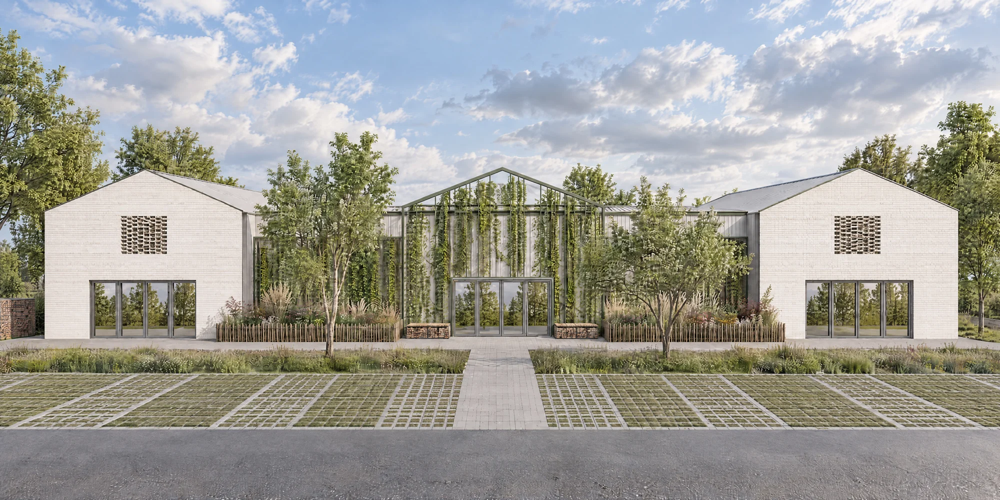
HALY V MĚŘÍTKU PŮVODNÍHO DRUŽSTVA.

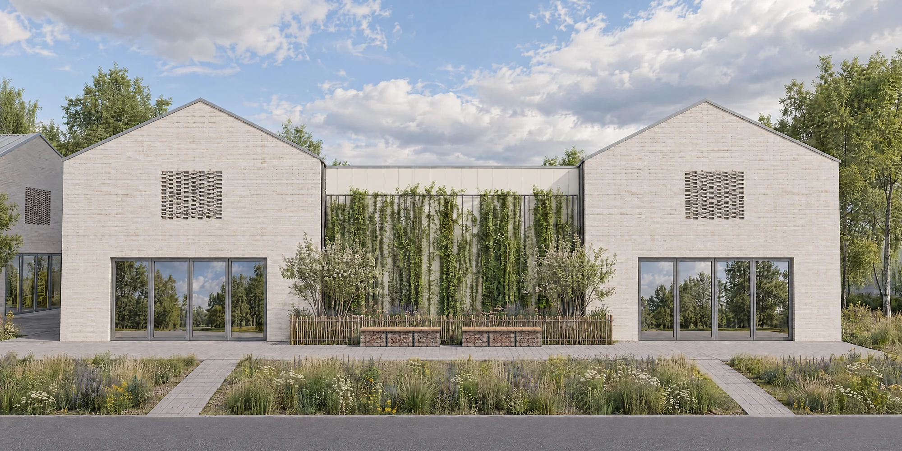
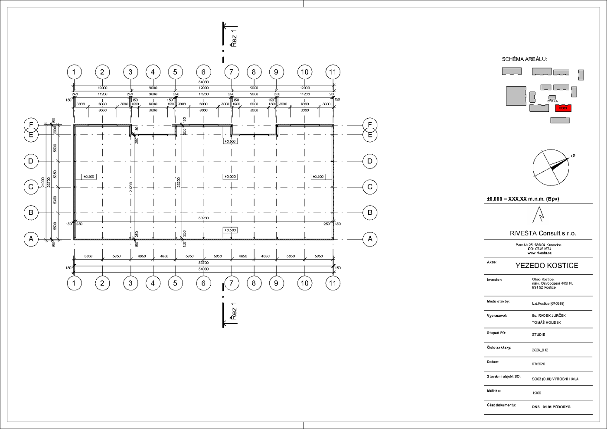
Půdorys haly SO03 ↗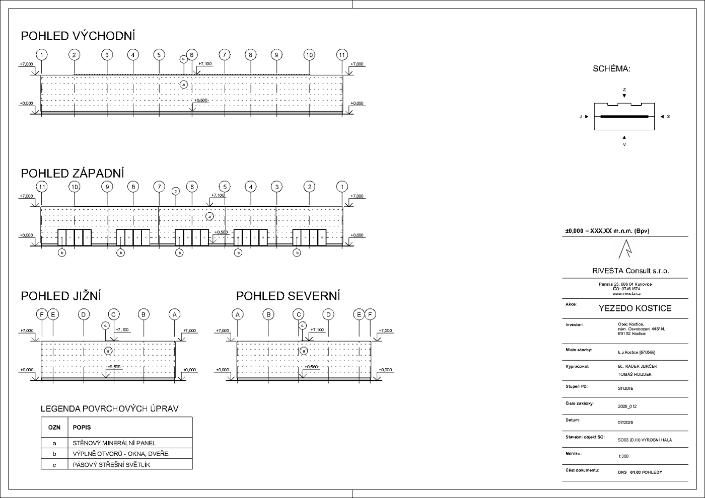
Pohledy haly SO03 ↗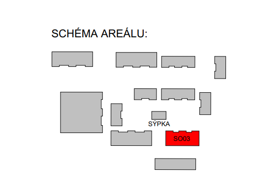
Poloha SO03 v areálu ↗Orientační zastavěná plocha, nikoli užitná. Návrh konstrukčního řešení hal: RIVESTA Consult, s.r.o.
Nabídka hal a dokumentaceProstor pro rozsáhlejší záměry
VELKÝ PROSTOR.
VELKÉ MOŽNOSTI.

Pohyb v areálu
VOLNÝ POHYB.
PLYNULÝ PROVOZ.
Pohyb lidí a zásobování koordinuje promyšlené dopravní řešení areálu.
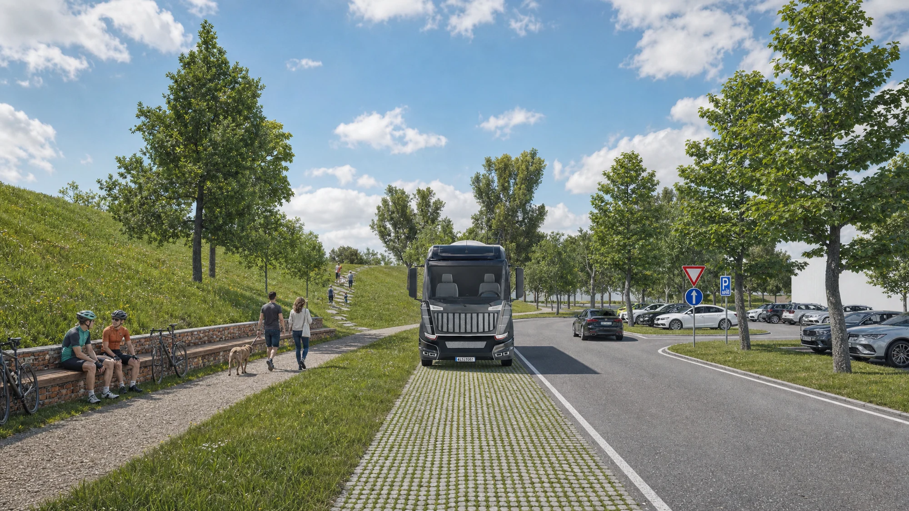
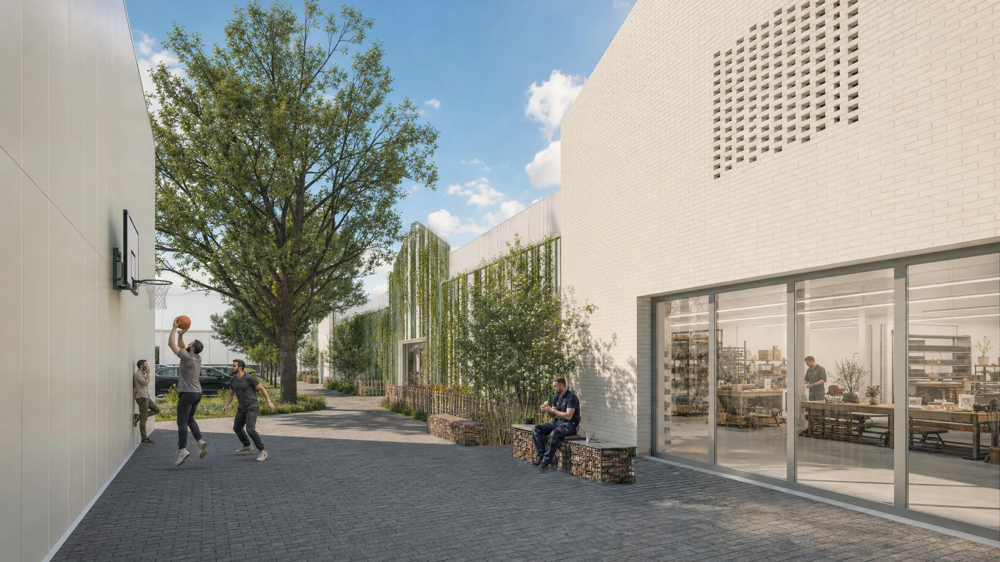
PAUZA PODLE VÁS.
Sport i klid. Příjemná zákoutí v zeleni přímo u práce.
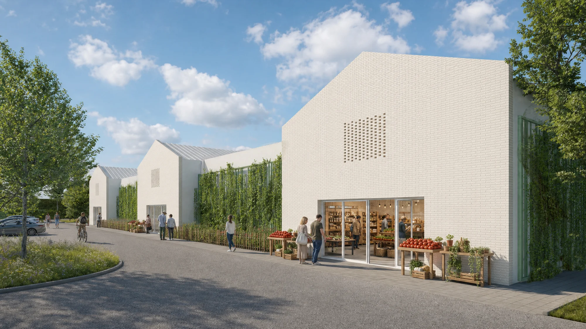
ŽIVOT NEKONČÍ SMĚNOU.
Místo pro setkávání a služby. Areál žije i po pracovní době.
Veřejný prostor / náměstíčko u sýpky
PROSTOR, KTERÝ
REPREZENTUJE.
Prestižní adresa pro vaši firmu. Otevřené náměstíčko pro každodenní život.
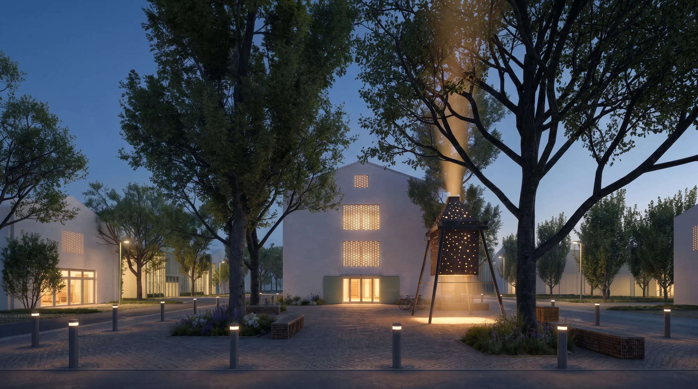
VODA A ZELEŇ MÍSTO BETONU.
Stín stromů, blízkost vody a místo k zastavení u severního průčelí sýpky. Prostředí, kde je příjemné pracovat, potkávat se i na chvíli zpomalit. Přírodní procesy se tu stávají součástí každodenního života a přispívají k pohodě celého místa.
OBILNÝ DVŮR. STÍN A SETKÁVÁNÍ.
Velké stromy před jižním průčelím sýpky chrání před sluncem. Gabionové lavičky z recyklovaných cihel nebo světelný objekt ze staré násypnice na obilí zvou k posezení.
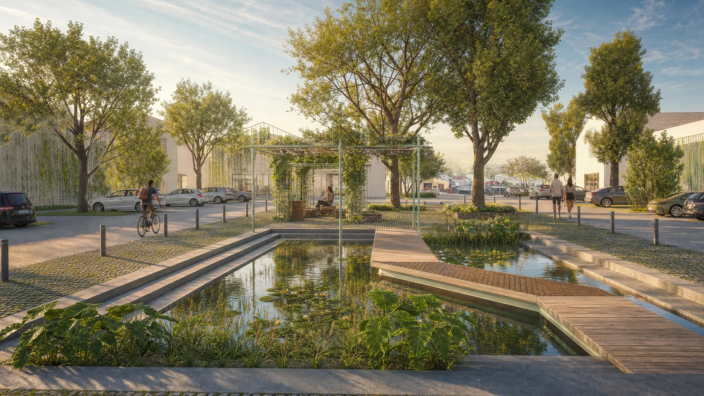
CHARAKTER, KTERÝ SPOJUJE.
Architektura vyrůstá z příběhu místa a dává mu nový výraz. Kvalitní veřejný prostor posiluje identitu i prestiž zdejších firem. Původní materiály, promyšlené detaily a volně rostoucí zeleň vytvářejí osobitou adresu. Místo, které přijmete za své.
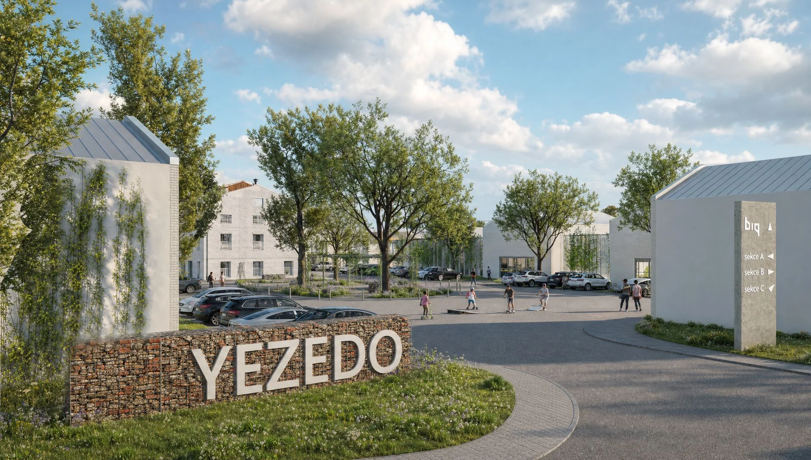
DOBRÁ ADRESA. I PO PRÁCI.
Reprezentativní vstupy firem, auta, pěší i cyklisté sdílejí jeden veřejný prostor. Místo pro pauzu, pohyb i víkendové setkání.
Voda / krajina / adaptace
VODA ZŮSTÁVÁ.
ZELEŇ OCHLAZUJE.
Experimentální klimatická laboratoř.
Inovace pro areál i celý region.
Cílem navrhovaného řešení je využít veškerou dešťovou vodu přímo v areálu, bez odtoku mimo území.
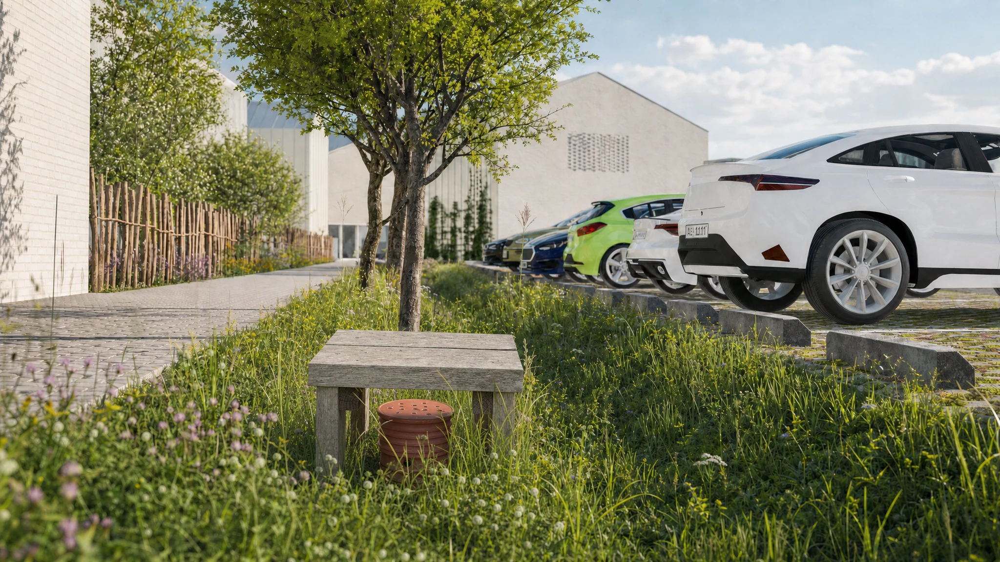
ZACHYTIT. VSÁKNOUT. OCHLADIT. UCHOVAT.
Propustné povrchy a mělké průlehy zachytí déšť. Voda se vsákne, rostliny ji evapotranspirací vrátí do ovzduší a ochladí okolí. Přebytky v akumulačních nádržích poslouží k zálivce v suchých obdobích.
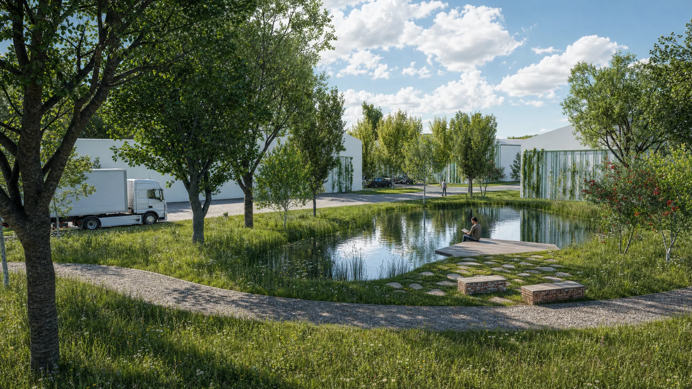
SUCHÝ POLDR. ŽIVÝ PARK.
Největší retenční nádrž bude za bezdeštných období suchým poldrem a centrem rekreačního parku v přímém kontaktu se zástavbou Kostic. Pálavská vyhlídka nabídne výhledy v jinak rovinaté krajině a propojení mezi obcí, smartzónou a krajinou.
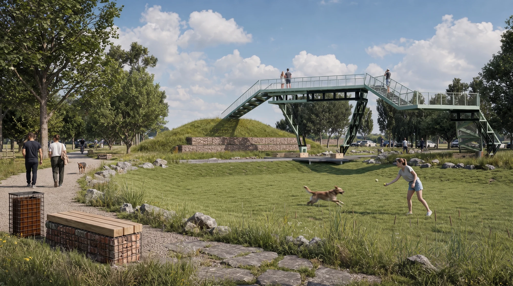
JEDEN SYSTÉM.
MĚŘITELNÝ PŘÍNOS.
ÚZEMÍ ŘÍZENÉ DATY.
Modrozelená infrastruktura – komplexní propojený systém vody a extenzivních nízkoúdržbových výsadeb pro suché podmínky jižní Moravy. Monitoring a řízení pomocí IoT. Napojení na inovační energetický demonstrátor pro obyvatele regionu.
MONITOROVAT. POROVNÁVAT. OVĚŘOVAT.
Udržitelnost podložená fakty – IoT monitoring má ověřovat fungování vody, výsadeb a energetiky v reálném provozu. Zobrazení dat ve volně dostupné aplikaci i na infopanelech v areálu.
Cirkularita / taktický urbanismus
MATERIÁL ZŮSTÁVÁ.
HODNOTA ROSTE.
Cirkulární ekonomika v architektuře.
ReUse zachovává. UpCycling přidává hodnotu.
Návrh vrací cihly, trámy a technické prvky původního JZD a sýpky do oběhu. Materiál i paměť zůstávají na místě.
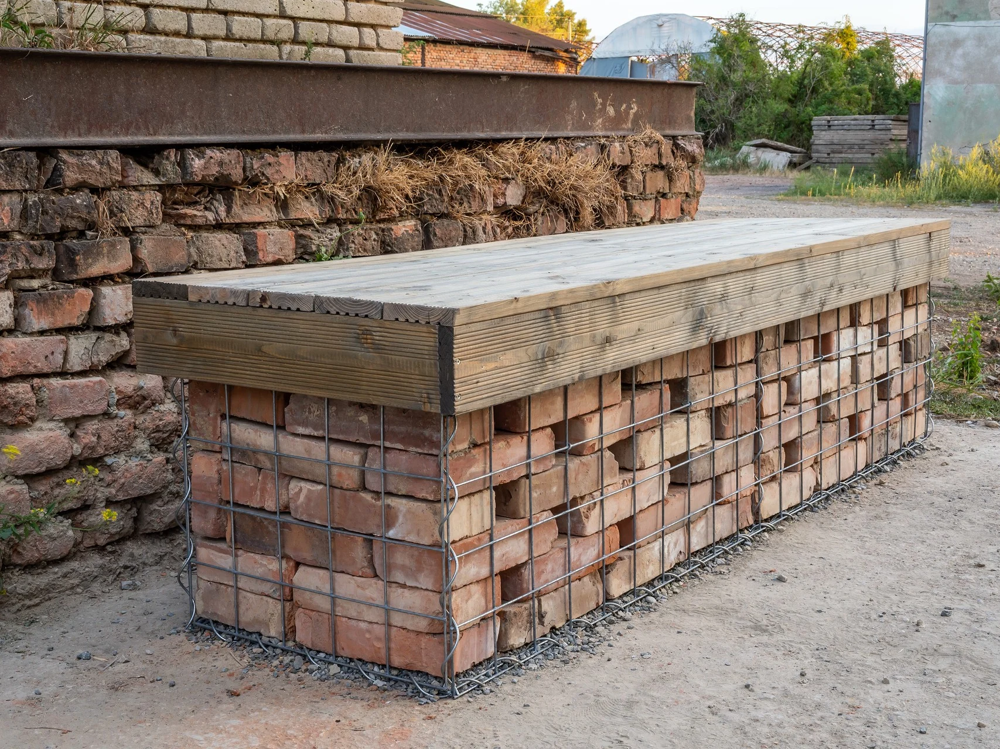
ZMAPOVAT. ZNOVU POUŽÍT.
Při likvidaci původních staveb nevzniká odpad, ale cenná surovina pro opětovné využití.
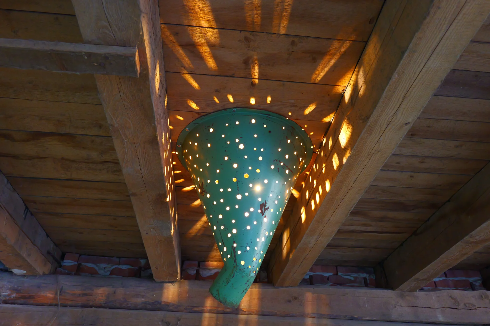
Z ODPADU DESIGN.
Z cihel vznikla gabionová lavička. Násypnice a ocelové výztuže ožívají jako designová svítidla a umělecké instalace.
Místo žije už před přestavbou
MÍSTO ŽIJE.
UŽ TEĎ.
Taktický urbanismus: malé zásahy a akce pro veřejnost vracejí do areálu život ještě před přestavbou.
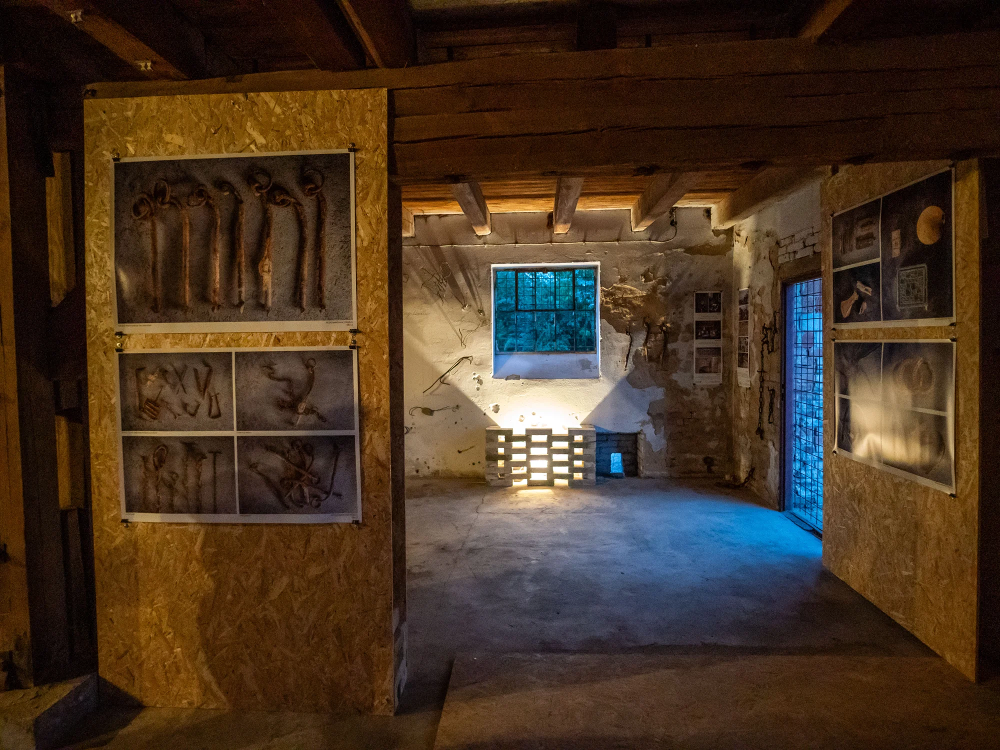
NEZAZNAMENANÉ PŘÍBĚHY.
Výstavy Nezaznamenané příběhy a Nový dech představily paměť místa a vizi jeho proměny (nejen) místním obyvatelům.

SÝPKA OTEVŘENÁ VEŘEJNOSTI.
Nový život místa již teď vytváří nová propojení mezi generacemi. Ačkoli ještě nové budovy nestojí, místo už teď žije novým příběhem.